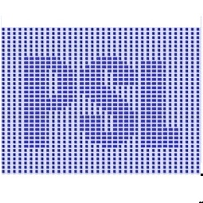

ORGANIZATION
Scientific committee
Dionisio Bernal, Northeastern University, USA
Raimondo Betti, Columbia University, USA
Necati Catbas, University of Centeral Florida, USA
Fu-Kuo Chang, Stanford University, USA
Eleni Chatzi, ETH Zurich, Switzerland
Zhang Chunwei, Qingdao University of Technology, China
Álvaro Cunha, University of Porto, Portugal
Dina D'Ayala, University College of London, UK
Shirley Dyke, Purdue University, USA
Charles Farrar, Los Alamos National Laboratory, USA
Yozo Fujino, Yokohama National University, Japan
Vincenzo Gattulli, Sapienza University of Rome, Italy
Carmelo Gentile, Polytechnic University of Milan, Italy
James Gibert, Purdue University, USA
Branko Glisic, Princeton University, USA
Salvador Ivorra, University of Alicante, Spain
Erik Johnson, University of Southern California, USA
Anne Kiremidjian, Stanford University, USA
Francesco Lanza Di Sc, University of California, San Diego, USA
Kincho Law, Stanford University, USA
Marco Lepidi, University of Genoa, Italy
Hong-Nan Li, Dalian University of Technology, China
Hui Li, Harbin Institue of Technology, China
Kenneth Loh, University of California, San Diego, USA
Yaozhi Luo, Zhejiang University, China
Jerome P. Lynch, University of Michigan, USA
Sami Masri, University of Southern California, USA
Satish Nagarajaiah, Rice University, USA
Tomonori Nagayama, University of Tokyo, Japan
Yi Qing Ni, Hong Kong Polytechnic University, Hong Kong
Mayuko Nishio, University of Tsukuba, Japan
Wieslaw Ostachowicz, Polish Academy of Sciences, Poland
Marcus Perry, University of Strathclyde, Glasgow, UK
Matteo Pozzi, Carnegie Mellon University, USA
Julio Ramirez, Purdue University, USA
Jose Rodellar, Polytechnic University of Catalonia, Spain
Walter Salvatore, University of Pisa, Italy
Kenichi Soga, University of California, Berkeley, USA
Hoon Sohn, Korea Advanced Institute of Science and Technology, South Korea
Billie F. Spencer, University Illinois at Urbana-Champaign, USA
Andrew Smyth, Columbia University, USA
Ertugrul Taciroglu, University of California, Los Angeles, USA
Michael Todd, University of California, San Diego, USA
Quek Ser Tong, National University of Singapore, Singapore
Limin Sun, Tongji University, China
David Wagg, The University of Sheffield, UK
Yang Wang, Georgia Institute of Technology, USA
Chung-Bang Yun, University of Zhejiang, China
Francesco Morelli, University of Pisa, Italy
Wei Song, University of Alabama, Tuscaloosa, USA
Organizing committee
Shirley Dyke, Purdue University, USA, Chair
Mohammad R. Jahanshahi, Purdue University, USA, Chair
Andres D. Arrieta, Purdue University, USA, Chair
Alana K Lund, Purdue University, USA
Herta P. Montoya, Purdue University, USA
Aman Thakkar, Purdue University, USA
Yu-Ting Huang, Purdue University, USA
Xiaoyu Liu, Purdue University, USA

